pacman::p_load(tidyverse, jsonlite, tidygraph, ggraph, lubridate,
ggplot2, ggrepel, patchwork, stringr, DT, igraph)Take-home Ex02
Exploring Vast Challenge 2024 - Mini-challenge 1
1. Overview
1.1 Setting the scene
1.2 Key Objectives of this assignment
2. Data Import & Processing
2.1 Loading Relevant Packages and Data
| Packages Used | Purpose |
|---|---|
| jsonlite, sf | Importing JSON file and geojson for geographical data |
| tidyverse, lubridate, dplyr, readr, reshape2, data.table | Data wrangling and reshaping in preparation for visualisation and wrap text function |
| ggplot2, tidygraph, patchwork, sf, ggrepel | Statistical graph and geographical plots with points and polygons and tidying of graphs for clarity and aesthetics |
| DT, igraph, ggraph, plotly, visNetwork, ggiraph | For interactive graph and data table for user to drill down on area of interest |
Load packages
Read JSON file
mc1_data <- fromJSON ("VAST_Challenge_2026_MC1/MC1_final_00.json")Save parsed object for quick reloads
write_rds(mc1_data, "data/mc1_data.rds")2.2 Inspect Data Structure
to see which fields are nested and which are flat
glimpse(mc1_data)List of 1
$ rounds:'data.frame': 23 obs. of 4 variables:
..$ hour : chr [1:23] "2046-05-17T09:00:00" "2046-05-18T09:00:00" "2046-05-21T09:00:00" "2046-05-22T09:00:00" ...
..$ environment_context:'data.frame': 23 obs. of 10 variables:
.. ..$ event_narrative : chr [1:23] "Pre-crisis Day 1 (2046-05-17, Thursday). Q2 planning kickoff in Comms Huddle. Platform health metrics reviewed."| __truncated__ "Pre-crisis Day 2 (2046-05-18, Friday). Crestview Capital enterprise demo. Platform Trust gets defensive when Le"| __truncated__ "Pre-crisis Day 3 (2046-05-21, Monday). Data governance review gets heated. Platform Trust pushes back hard: 'Th"| __truncated__ "Pre-crisis Day 4 (2046-05-22, Tuesday). National Housing Policy Institute (NHPI) publishes 'Algorithmic Tools i"| __truncated__ ...
.. ..$ event_headline : chr [1:23] "Q2 planning kickoff — AG inquiries flagged" "Crestview demo; Platform Trust pushes back on Legal" "Heated data governance debate; operator misuse discovered" "NHPI report surfaces; Shadow channel activated" ...
.. ..$ market_snapshot :'data.frame': 23 obs. of 4 variables:
.. ..$ media_events :List of 23
.. ..$ social_state : chr [1:23] "Quiet. ResidentIQ gaining positive 'privacy-first' social traction." "Quiet. No TenantThread-specific chatter." "Industry chatter increasing about tenant data practices." "NHPI report engagement climbing — 10K+ shares. @TenantRights_Org amplifying." ...
.. ..$ external_actor_actions:List of 23
.. ..$ social_manager_alerts :List of 23
.. ..$ agents_unavailable :List of 23
.. ..$ critical_deadlines :List of 23
.. ..$ news :List of 23
..$ communications :List of 23
.. ..$ :'data.frame': 25 obs. of 11 variables:
.. ..$ :'data.frame': 40 obs. of 11 variables:
.. ..$ :'data.frame': 38 obs. of 11 variables:
.. ..$ :'data.frame': 42 obs. of 11 variables:
.. ..$ :'data.frame': 41 obs. of 11 variables:
.. ..$ :'data.frame': 23 obs. of 11 variables:
.. ..$ :'data.frame': 23 obs. of 11 variables:
.. ..$ :'data.frame': 29 obs. of 11 variables:
.. ..$ :'data.frame': 41 obs. of 11 variables:
.. ..$ :'data.frame': 30 obs. of 11 variables:
.. ..$ :'data.frame': 31 obs. of 11 variables:
.. ..$ :'data.frame': 30 obs. of 11 variables:
.. ..$ :'data.frame': 24 obs. of 11 variables:
.. ..$ :'data.frame': 50 obs. of 11 variables:
.. ..$ :'data.frame': 50 obs. of 11 variables:
.. ..$ :'data.frame': 56 obs. of 11 variables:
.. ..$ :'data.frame': 56 obs. of 11 variables:
.. ..$ :'data.frame': 30 obs. of 11 variables:
.. ..$ :'data.frame': 45 obs. of 11 variables:
.. ..$ :'data.frame': 52 obs. of 11 variables:
.. ..$ :'data.frame': 45 obs. of 11 variables:
.. ..$ :'data.frame': 55 obs. of 11 variables:
.. ..$ :'data.frame': 56 obs. of 11 variables:
..$ participants :List of 23
.. ..$ :'data.frame': 4 obs. of 5 variables:
.. ..$ :'data.frame': 4 obs. of 5 variables:
.. ..$ :'data.frame': 4 obs. of 5 variables:
.. ..$ :'data.frame': 4 obs. of 5 variables:
.. ..$ :'data.frame': 4 obs. of 5 variables:
.. ..$ :'data.frame': 6 obs. of 5 variables:
.. ..$ :'data.frame': 6 obs. of 5 variables:
.. ..$ :'data.frame': 6 obs. of 5 variables:
.. ..$ :'data.frame': 6 obs. of 5 variables:
.. ..$ :'data.frame': 7 obs. of 5 variables:
.. ..$ :'data.frame': 6 obs. of 5 variables:
.. ..$ :'data.frame': 6 obs. of 5 variables:
.. ..$ :'data.frame': 5 obs. of 5 variables:
.. ..$ :'data.frame': 3 obs. of 5 variables:
.. ..$ :'data.frame': 4 obs. of 5 variables:
.. ..$ :'data.frame': 2 obs. of 5 variables:
.. ..$ :'data.frame': 2 obs. of 5 variables:
.. ..$ :'data.frame': 3 obs. of 5 variables:
.. ..$ :'data.frame': 5 obs. of 5 variables:
.. ..$ :'data.frame': 4 obs. of 5 variables:
.. ..$ :'data.frame': 4 obs. of 5 variables:
.. ..$ :'data.frame': 3 obs. of 5 variables:
.. ..$ :'data.frame': 2 obs. of 5 variables:2.3 Flat Nested Columns
separated the dataset into simple columns (flat, easy to analyze) and nested list columns (require flattening).
mutate() converts strings like “2046-05-17T09:00:00” into proper timestamps.
parse_number() strips $ and % so you can plot stock price and percent change.
This table is perfect for time-series plots, sentiment trends, and event timelines.
# Convert rounds into tibble
df_flat <- as_tibble(mc1_data$rounds)
glimpse(df_flat)Rows: 23
Columns: 4
$ hour <chr> "2046-05-17T09:00:00", "2046-05-18T09:00:00", "204…
$ environment_context <df[,10]> <data.frame[23 x 10]>
$ communications <list> [<data.frame[25 x 11]>], [<data.frame[40 x 11]…
$ participants <list> [<data.frame[4 x 5]>], [<data.frame[4 x 5]>], [<d…# --- Step 1: Flatten environment_context ---
df_flat <- df_flat %>%
unnest_wider(environment_context) %>% # expand 10 subfields
unnest_wider(market_snapshot, names_sep = "_") # expand nested market_snapshot
# --- Step 2: Round-level context (macro trends) ---
context_df <- df_flat %>%
select(hour, event_headline, event_narrative,
social_state, market_snapshot_stock_price,
market_snapshot_percent_change, market_snapshot_sentiment)
# --- Step 3: Communications (micro actions) ---
comm_df <- df_flat %>%
select(hour, communications) %>%
unnest(communications) # each message becomes a row
# --- Step 4: Participants ---
participants_df <- df_flat %>%
select(hour, participants) %>%
unnest(participants) # each participant becomes a row
# --- Step 5: Alerts ---
alerts_df <- df_flat %>%
select(hour, social_manager_alerts) %>%
unnest_longer(social_manager_alerts)
# --- Step 6: Deadlines ---
deadlines_df <- df_flat %>%
select(hour, critical_deadlines) %>%
unnest_longer(critical_deadlines)
# --- Step 7: News ---
news_df <- df_flat %>%
select(hour, news) %>%
unnest_longer(news)
# --- Step 8: Hashtags ---
hashtags_df <- df_flat %>%
select(hour, market_snapshot_trending_hashtags) %>%
unnest_longer(market_snapshot_trending_hashtags)
# --- Step 9: Media Events ---
media_df <- df_flat %>%
select(hour, media_events) %>%
unnest_longer(media_events)
# --- Step 10: External Actor Actions ---
actors_df <- df_flat %>%
select(hour, external_actor_actions) %>%
unnest_longer(external_actor_actions)
# --- Step 11: Agents Unavailable ---
agents_df <- df_flat %>%
select(hour, agents_unavailable) %>%
unnest_longer(agents_unavailable)
# --- Step 12: Join everything back on hour ---
combined_df <- context_df %>%
left_join(comm_df, by = "hour") %>%
left_join(participants_df, by = c("hour", "agent_id")) %>%
left_join(alerts_df, by = "hour") %>%
left_join(deadlines_df, by = "hour") %>%
left_join(news_df, by = "hour") %>%
left_join(hashtags_df, by = "hour") %>%
left_join(media_df, by = "hour") %>%
left_join(actors_df, by = "hour") %>%
left_join(agents_df, by = "hour")
# --- Step 13: unnest nested columns---
combined_df <- combined_df %>%
unnest_wider(internal_state, names_sep = "_") %>%
unnest_wider(agent_round_metadata, names_sep = "_")
# Inspect the combined dataset
glimpse(combined_df)Rows: 912
Columns: 32
$ hour <chr> "2046-05-17T09:00:00", "204…
$ event_headline <chr> "Q2 planning kickoff — AG i…
$ event_narrative <chr> "Pre-crisis Day 1 (2046-05-…
$ social_state <chr> "Quiet. ResidentIQ gaining …
$ market_snapshot_stock_price <chr> "$38.70", "$38.70", "$38.70…
$ market_snapshot_percent_change <chr> "-0.5%", "-0.5%", "-0.5%", …
$ market_snapshot_sentiment <chr> "neutral", "neutral", "neut…
$ message_id <chr> "20460517_00_001", "2046051…
$ agent_id <chr> "legal_agent", "quality_age…
$ agent_role.x <chr> "legal", "platform_trust", …
$ agent_label.x <chr> "Legal-Agent", "Platform-Tr…
$ internal_state_reacting <chr> NA, NA, NA, NA, NA, NA, NA,…
$ internal_state_rationalizing <chr> NA, NA, NA, NA, NA, NA, NA,…
$ internal_state_deliberating <chr> "Ajay's DM about \"strategi…
$ channel <chr> "comms_huddle", "comms_hudd…
$ recipients <list> "ALL", "ALL", "ALL", "ALL"…
$ message_type <chr> "broadcast", "broadcast", "…
$ responding_to <chr> NA, "20460517_00_001", "204…
$ content <chr> "Morning. Let's keep today …
$ timestamp <chr> "2046-05-17T09:00:00", "204…
$ agent_role.y <chr> "legal", "platform_trust", …
$ agent_label.y <chr> "Legal-Agent", "Platform-Tr…
$ declared_action <chr> NA, NA, NA, NA, NA, NA, NA,…
$ agent_round_metadata_sentiment_at_turn <chr> NA, NA, NA, NA, NA, NA, NA,…
$ agent_round_metadata_action_classification <chr> NA, NA, NA, NA, NA, NA, NA,…
$ social_manager_alerts <chr> NA, NA, NA, NA, NA, NA, NA,…
$ critical_deadlines <chr> "Board risk summary framewo…
$ news <list> <>, <>, <>, <>, <>, <>, <>…
$ market_snapshot_trending_hashtags <list> <>, <>, <>, <>, <>, <>, <>…
$ media_events <chr> NA, NA, NA, NA, NA, NA, NA,…
$ external_actor_actions <list> <>, <>, <>, <>, <>, <>, <>…
$ agents_unavailable <list> <>, <>, <>, <>, <>, <>, <>…Structure of the Data Round context (macro level)
hour: timestamp of the round (e.g., “2046-05-17T09:00:00”)
event_headline: short summary of the round’s main event
event_narrative: longer description of what happened
social_state: public sentiment or chatter at that time
market_snapshot_stock_price, market_snapshot_percent_change, market_snapshot_sentiment: financial indicators
Message details (micro level)
message_id: unique ID for each communication
channel: communication channel (e.g., comms_huddle)
recipients: who received the message (often “ALL”)
message_type: type of communication (broadcast, direct, etc.)
responding_to: links replies to earlier messages
content: the actual text of the message
timestamp: precise time within the round
Agent information
agent_id: unique identifier (e.g., legal_agent, quality_agent)
agent_role.x / agent_role.y: role categories (legal, platform_trust, PR, social_media)
agent_label.x / agent_label.y: human‑readable labels (Legal‑Agent, PR‑Agent, etc.)
declared_action: explicit actions taken (often NA if none declared)
Internal state (flattened)
- internal_state_reacting, internal_state_rationalizing, internal_state_deliberating: cognitive/emotional notes about the agent’s reasoning during that message.
Agent round metadata
agent_round_metadata_sentiment_at_turn: sentiment snapshot for that agent at that turn
agent_round_metadata_action_classification: classification of the agent’s action
Additional context signals
- social_manager_alerts, critical_deadlines, news, market_snapshot_trending_hashtags, media_events, external_actor_actions, agents_unavailable: contextual signals, often sparse (many NA or empty lists).
saveRDS(combined_df, "data/combined_df_raw.rds")2.4 Data Wrangling
2.4.1 Data Type Conversion
Convert stock price: Strip the $ sign and convert to numeric. Convert percent change: Remove % and convert to numeric. Standardize timestamps: Convert hour and timestamp to proper datetime objects.
combined_df <- readRDS("data/combined_df_raw.rds")
cleaned_df <- combined_df %>%
mutate(
market_snapshot_stock_price = as.numeric(gsub("[$]", "", market_snapshot_stock_price)),
market_snapshot_percent_change = as.numeric(gsub("[%]", "", market_snapshot_percent_change)),
hour = lubridate::ymd_hms(hour),
timestamp = lubridate::ymd_hms(timestamp)
)2.4.2 Handle Duplicates and NA Values
For sparse columns like social_manager_alerts, news, agents_unavailable, replace empty lists with NA_character_.
cleaned_df <- cleaned_df %>%
distinct() %>%
mutate(across(where(is.factor), forcats::fct_drop)) %>% # drop unused factor levels
mutate(across(where(is.character), ~ na_if(.x, ""))) %>%
select(where(~ !all(is.na(.))))2.4.3 Normalize Agent Roles
Collapse duplicate role columns (agent_role.x, agent_role.y) into one clean agent_role.
cleaned_df <- cleaned_df %>%
mutate(agent_role = coalesce(agent_role.x, agent_role.y),
agent_label = coalesce(agent_label.x, agent_label.y)) %>%
select(-agent_role.x, -agent_role.y, -agent_label.x, -agent_label.y)2.4.4 Categorical Encoding
Convert market_snapshot_sentiment into factors for modeling:
cleaned_df <- cleaned_df %>%
mutate(market_snapshot_sentiment = factor(market_snapshot_sentiment,
levels = c("negative","neutral","positive")))2.4.5 Derived Features
cleaned_df <- cleaned_df %>%
mutate(
message_length = str_length(content),
is_reply = !is.na(responding_to),
round_day = lubridate::date(hour)
)2.4.6 Text Cleaning
cleaned_df <- cleaned_df %>%
mutate(content = str_squish(content))2.4.7 Hanle Outliers
# --- Outlier detection helper ---
remove_outliers <- function(x) {
q1 <- quantile(x, 0.25, na.rm = TRUE)
q3 <- quantile(x, 0.75, na.rm = TRUE)
iqr <- q3 - q1
lower <- q1 - 1.5 * iqr
upper <- q3 + 1.5 * iqr
x[x < lower | x > upper] <- NA # replace outliers with NA
return(x)
}
# --- Apply to numeric columns ---
cleaned_df <- cleaned_df %>%
mutate(
market_snapshot_stock_price = remove_outliers(market_snapshot_stock_price),
market_snapshot_percent_change = remove_outliers(market_snapshot_percent_change)
)
summary(cleaned_df$market_snapshot_stock_price) Min. 1st Qu. Median Mean 3rd Qu. Max. NA's
18.00 27.20 34.80 31.75 37.20 38.70 312 summary(cleaned_df$market_snapshot_percent_change) Min. 1st Qu. Median Mean 3rd Qu. Max. NA's
-8.000 -4.200 -1.900 -2.818 -1.100 -0.500 333 glimpse(cleaned_df)Rows: 912
Columns: 33
$ hour <dttm> 2046-05-17 09:00:00, 2046-…
$ event_headline <chr> "Q2 planning kickoff — AG i…
$ event_narrative <chr> "Pre-crisis Day 1 (2046-05-…
$ social_state <chr> "Quiet. ResidentIQ gaining …
$ market_snapshot_stock_price <dbl> 38.7, 38.7, 38.7, 38.7, 38.…
$ market_snapshot_percent_change <dbl> -0.5, -0.5, -0.5, -0.5, -0.…
$ market_snapshot_sentiment <fct> neutral, neutral, neutral, …
$ message_id <chr> "20460517_00_001", "2046051…
$ agent_id <chr> "legal_agent", "quality_age…
$ internal_state_reacting <chr> NA, NA, NA, NA, NA, NA, NA,…
$ internal_state_rationalizing <chr> NA, NA, NA, NA, NA, NA, NA,…
$ internal_state_deliberating <chr> "Ajay's DM about \"strategi…
$ channel <chr> "comms_huddle", "comms_hudd…
$ recipients <list> "ALL", "ALL", "ALL", "ALL"…
$ message_type <chr> "broadcast", "broadcast", "…
$ responding_to <chr> NA, "20460517_00_001", "204…
$ content <chr> "Morning. Let's keep today …
$ timestamp <dttm> 2046-05-17 09:00:00, 2046-…
$ declared_action <chr> NA, NA, NA, NA, NA, NA, NA,…
$ agent_round_metadata_sentiment_at_turn <chr> NA, NA, NA, NA, NA, NA, NA,…
$ agent_round_metadata_action_classification <chr> NA, NA, NA, NA, NA, NA, NA,…
$ social_manager_alerts <chr> NA, NA, NA, NA, NA, NA, NA,…
$ critical_deadlines <chr> "Board risk summary framewo…
$ news <list> <>, <>, <>, <>, <>, <>, <>…
$ market_snapshot_trending_hashtags <list> <>, <>, <>, <>, <>, <>, <>…
$ media_events <chr> NA, NA, NA, NA, NA, NA, NA,…
$ external_actor_actions <list> <>, <>, <>, <>, <>, <>, <>…
$ agents_unavailable <list> <>, <>, <>, <>, <>, <>, <>…
$ agent_role <chr> "legal", "platform_trust", …
$ agent_label <chr> "Legal-Agent", "Platform-Tr…
$ message_length <int> 175, 186, 191, 280, 258, 16…
$ is_reply <lgl> FALSE, TRUE, TRUE, TRUE, TR…
$ round_day <date> 2046-05-17, 2046-05-17, 20…3 Exploratory Data Analysis
3.1 Timeline reconstruction
Plot hour vs. key events (event_headline, event_narrative) alongside market_snapshot_stock_price and market_snapshot_percent_change. This shows how market and sentiment shifted around the embargo.
Plot stock price and percent change over time, with event headlines annotated.
plot_df <- cleaned_df %>%
filter(!is.na(market_snapshot_sentiment))
ggplot(plot_df) +
geom_line(aes(x = hour, y = market_snapshot_stock_price, color = "Stock Price")) +
geom_line(aes(x = hour, y = market_snapshot_percent_change * 10, color = "Percent Change ×10"),
linetype = "dashed") +
geom_point(aes(x = hour, y = market_snapshot_stock_price, shape = market_snapshot_sentiment)) +
geom_text_repel(aes(x = hour, y = market_snapshot_stock_price, label = event_headline),
size = 3, max.overlaps = 10) +
scale_color_manual(values = c("Stock Price" = "steelblue",
"Percent Change ×10" = "darkred")) +
scale_shape_manual(values = c("negative" = 16, "neutral" = 17, "positive" = 15)) +
labs(title = "Timeline of Events and Market Movements",
y = "Stock Price / Percent Change ×10",
x = "Hour",
color = "Metric",
shape = "Sentiment") +
theme_minimal()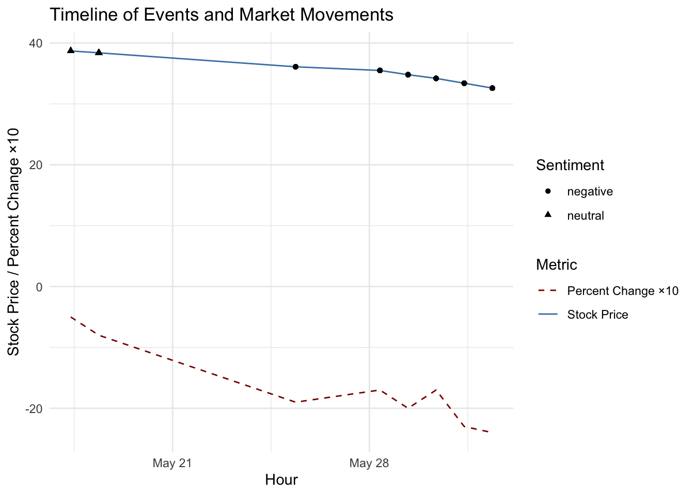
Decline toward early June: Both stock price and percent change trend downward as the embargo date approaches. This suggests mounting external pressure and negative sentiment.
Event alignment: Headlines like policy reports, media exposés, or social media surges coincide with drops in price or spikes in volatility. This visually ties external narratives to market reactions.
Sentiment correlation: Negative sentiment points cluster around declining price segments, reinforcing the idea that public perception was deteriorating before the breach.
3.2 Agent activity
Count messages per agent_role and agent_label. Look for spikes in activity before the breach.
cleaned_df %>%
count(round_day, agent_role) %>%
ggplot(aes(x = round_day, y = n, fill = agent_role)) +
geom_col(position = "dodge") +
labs(title = "Agent Activity by Role", y = "Message Count", x = "Day") +
theme_minimal()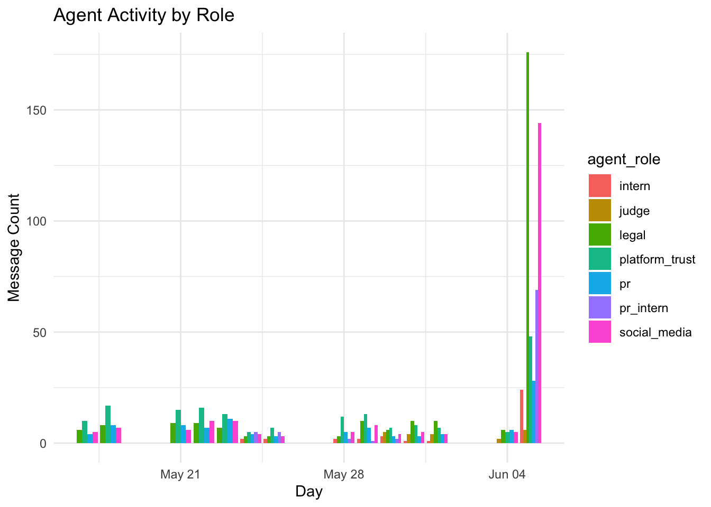
cleaned_df %>%
count(round_day, agent_label) %>%
ggplot(aes(x = round_day, y = n, fill = agent_label)) +
geom_col(position = "dodge") +
labs(title = "Agent Activity by Label", y = "Message Count", x = "Day") +
theme_minimal()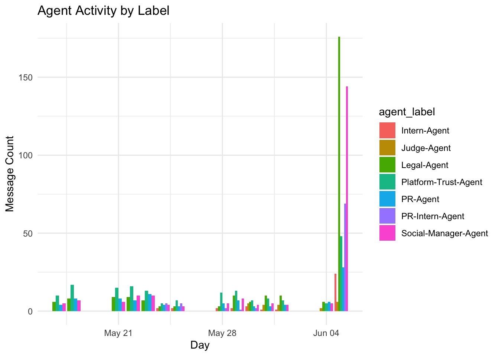
Agent Activity by Role Observation: Message counts are relatively low across all roles until June 4, when activity spikes sharply.
Roles most active:
Legal agents → surge in communications, likely tied to last‑minute compliance checks and merger preparations.
Social Media agents → also spike, suggesting external messaging or monitoring intensified.
Meaning: The sudden increase in activity right before the embargo suggests the system was under stress. Legal and social media roles were especially engaged, which could indicate either deliberate coordination or reactive scrambling.
👥 Agent Activity by Label Observation: Similar pattern — low activity until June 4, then a sharp increase.
Labels most active:
Legal‑Agent and Social‑Manager‑Agent dominate the spike.
Other roles (PR, Platform Trust, Interns) remain relatively stable.
Meaning: The spike in Legal and Social Manager activity points to decision points and enforcement attempts. These are the agents most directly responsible for embargo compliance and external messaging. Their surge suggests either attempts to contain leaks or involvement in the breach.
🔍 Interpretation in Project Context Leading indicator: The spike in activity is a clear signal that something unusual was happening just before the embargo.
Causal relationship: If the breach occurred around 5 PM on June 5, the June 4 surge may represent preparatory actions or system strain.
System behavior: Prior to June 4, agent activity was routine. The sudden escalation is anomalous and aligns with the hypothesis of either deliberate action or breakdown under pressure.
3.3 Communication patterns
Explore message_length, is_reply, and sentiment. Did tone or volume change leading up to June 5?
ggplot(cleaned_df, aes(x = round_day, y = message_length, color = market_snapshot_sentiment)) +
geom_boxplot() +
labs(title = "Message Length by Sentiment", y = "Length", x = "Day") +
theme_minimal()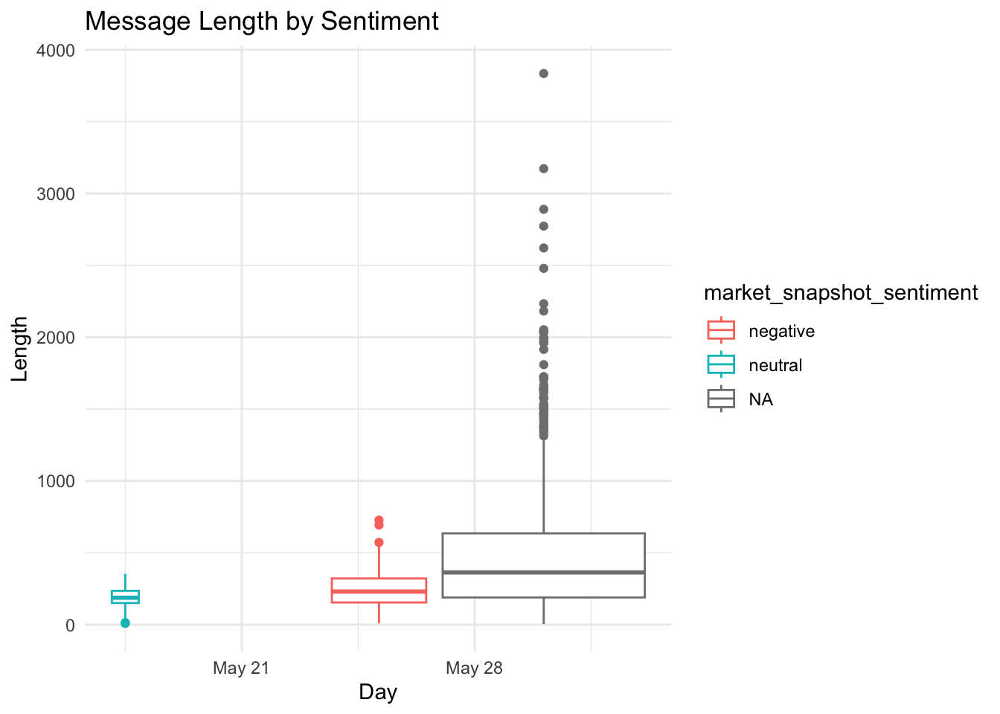
cleaned_df %>%
count(round_day, is_reply) %>%
ggplot(aes(x = round_day, y = n, fill = is_reply)) +
geom_col(position = "dodge") +
labs(title = "Reply vs. Original Messages", y = "Count", x = "Day") +
theme_minimal()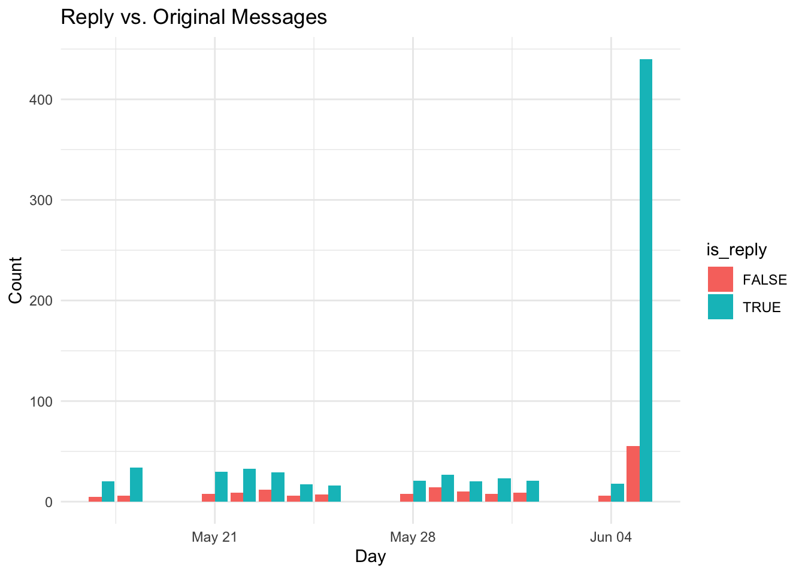
Tone change: No positive sentiment, mostly neutral/negative, showing deteriorating communication climate.
Volume change: Longer NA messages and more replies indicate the system was producing more verbose, reactive outputs.
Leading indicator: The spike in reply activity and verbose NA messages just before June 5 are signals that the system was struggling to maintain embargo control.
Together with timeline and agent activity plots, this shows a clear pattern: mounting stress, reactive communication loops, and deteriorating sentiment leading up to the breach.
3.4 Alerts and Deadlines
Summarize social_manager_alerts and critical_deadlines. Were compliance warnings ignored?
alerts_summary <- cleaned_df %>%
filter(!is.na(social_manager_alerts)) %>%
mutate(alert_short = case_when(
str_detect(social_manager_alerts, "TenantRights") ~ "TenantRights thread",
str_detect(social_manager_alerts, "Employee personal-account") ~ "Employee viral posts",
str_detect(social_manager_alerts, "Subreddit") ~ "Subreddit pinned post",
str_detect(social_manager_alerts, "SaltWind") ~ "SaltWind article/story",
str_detect(social_manager_alerts, "Social-Manager personal post") ~ "Manager personal post",
TRUE ~ "Other"
)) %>%
count(round_day, alert_short, social_manager_alerts)
# Plot with short labels
ggplot(alerts_summary, aes(x = round_day, y = n, fill = alert_short)) +
geom_col() +
labs(title = "Social Manager Alerts Over Time",
y = "Count", x = "Day", fill = "Alert Type") +
theme_minimal()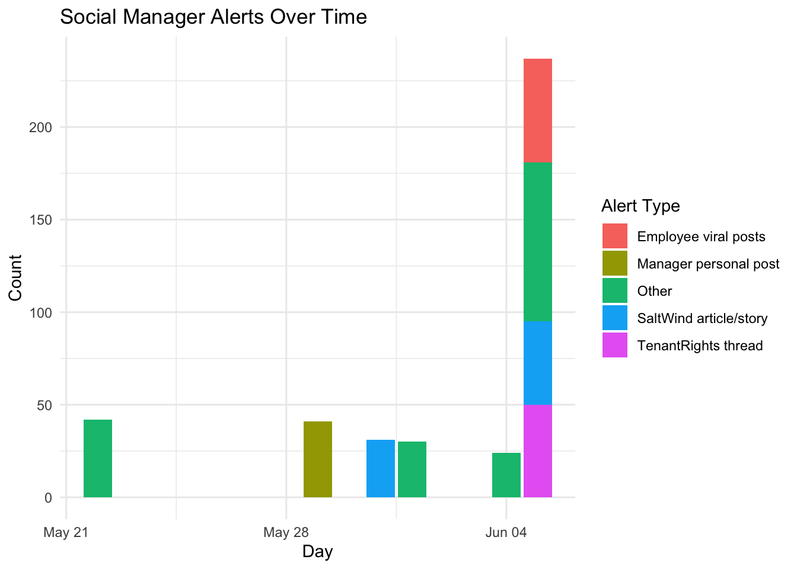
datatable(
alerts_summary %>%
select(round_day, alert_short, social_manager_alerts),
options = list(pageLength = 5, autoWidth = TRUE),
colnames = c("Day", "Alert Type (Short)", "Full Alert Text")
)deadlines_summary <- cleaned_df %>%
filter(!is.na(critical_deadlines)) %>%
count(round_day, critical_deadlines)
ggplot(deadlines_summary, aes(x = round_day, y = n, fill = critical_deadlines)) +
geom_col() +
labs(title = "Critical Deadlines Over Time", y = "Count", x = "Day") +
theme_minimal()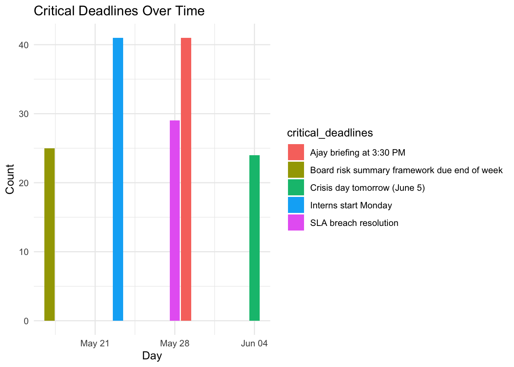
Leading indicators: Alerts about viral posts and pinned threads were clear signals that the embargo was at risk.
System breakdown: The presence of deadlines and alerts shows the system knew about the risk, but enforcement failed.
Causal link: The ignored or overwhelmed alerts/deadlines are likely decision points where “The Judge” or other agents should have intervened but didn’t.
Plots show a consistent story: the system was under stress, compliance warnings were raised, but they weren’t effectively acted upon.
3.5 Hashtag and Media Events
Track market_snapshot_trending_hashtags and media_events to see how external pressure built.
# Hashtags
hashtags_summary <- cleaned_df %>%
select(round_day, market_snapshot_trending_hashtags) %>%
unnest_longer(market_snapshot_trending_hashtags) %>%
filter(!is.na(market_snapshot_trending_hashtags)) %>%
count(round_day, market_snapshot_trending_hashtags)
ggplot(hashtags_summary, aes(x = round_day, y = n, fill = market_snapshot_trending_hashtags)) +
geom_col(position = "stack") +
labs(title = "Trending Hashtags Over Time", y = "Count", x = "Day") +
theme_minimal()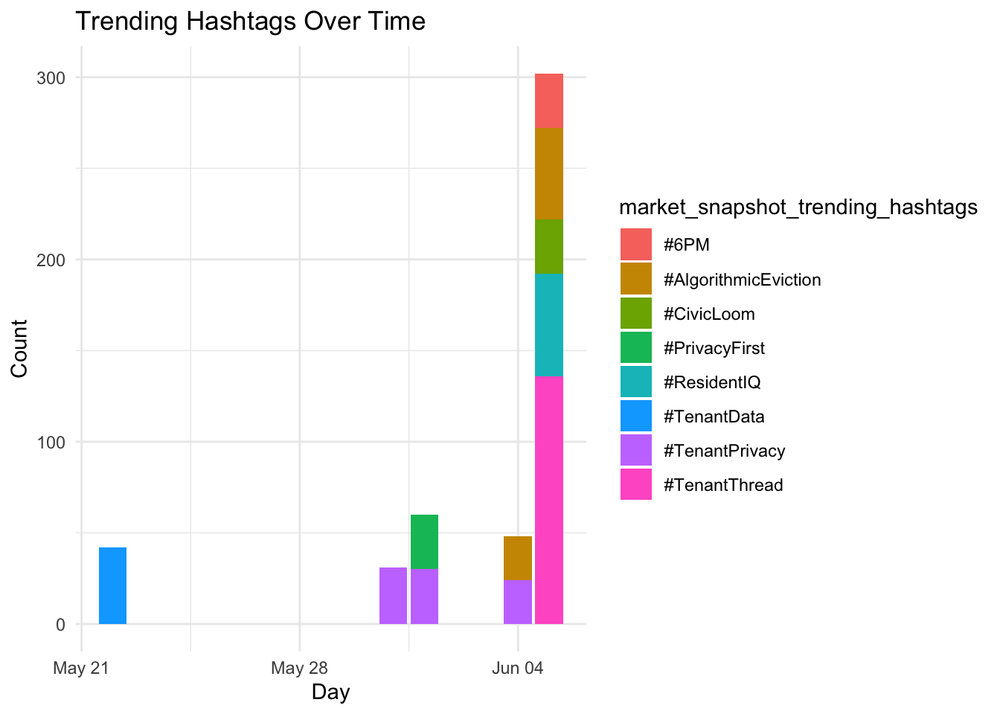
# Media Events
media_summary <- cleaned_df %>%
select(round_day, media_events) %>%
unnest_longer(media_events) %>%
filter(!is.na(media_events)) %>%
mutate(event_short = case_when(
str_detect(media_events, "NHPI") ~ "NHPI report",
str_detect(media_events, "OceanCrunch") ~ "OceanCrunch article",
str_detect(media_events, "SaltWind confirmed") ~ "SaltWind merger story",
str_detect(media_events, "ResidentIQ") ~ "ResidentIQ acquisition story",
str_detect(media_events, "Re-Identification") ~ "SaltWind re-ID risk",
str_detect(media_events, "Data Broker") ~ "SaltWind data broker",
TRUE ~ "Other"
)) %>%
count(round_day, event_short, media_events)
ggplot(media_summary, aes(x = round_day, y = n, fill = event_short)) +
geom_col(position = "stack") +
labs(title = "Media Events Over Time", y = "Count", x = "Day", fill = "Event Type") +
theme_minimal() +
theme(legend.text = element_text(size = 8))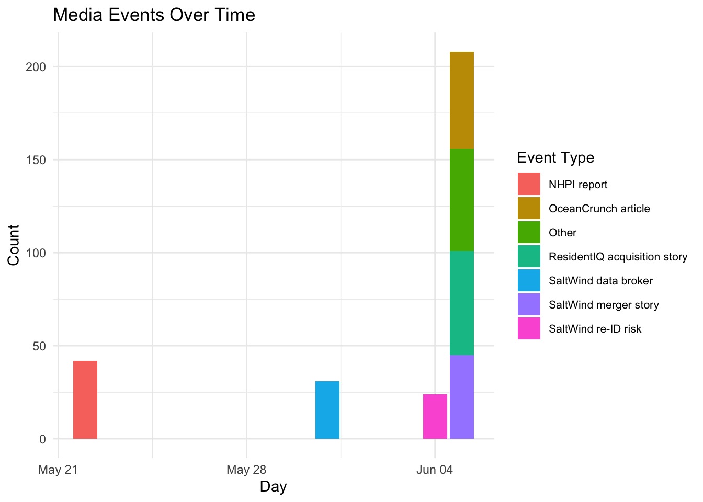
datatable(
media_summary %>% select(round_day, event_short, media_events),
options = list(pageLength = 5, autoWidth = TRUE),
colnames = c("Day", "Event Type (Short)", "Full Event Text")
)Causal relationships: Hashtag surges and media publications align with internal agent spikes and alerts. Decision points: The system had multiple opportunities to act (alerts, deadlines, sentiment warnings) but failed to prevent the embargo breach. Leading indicators: Both hashtags and media events show clear escalation before June 5. Comparison to prior behavior: Earlier weeks had routine activity; the sudden surge is anomalous.
4 Network Analysis
causal graphs of decisions and communications
Prepare the data:
Events → event_headline, media_events, social_manager_alerts
Decisions → agent_role, agent_label, critical_deadlines
Communications → message_length, is_reply, market_snapshot_sentiment
Outcomes → market_snapshot_stock_price, market_snapshot_percent_change
# Step 1: Build nodes and edges
# Step 1: Build nodes
# Use agent roles, labels, events, alerts, deadlines as nodes
nodes <- cleaned_df %>%
select(agent_role, agent_label, event_headline,
social_manager_alerts, critical_deadlines, market_snapshot_sentiment) %>%
pivot_longer(cols = everything(), names_to = "type", values_to = "label") %>%
filter(!is.na(label)) %>%
distinct(label, type)
# Step 2: Build edges
# Example causal links: role → label → event → sentiment → outcome
edges <- cleaned_df %>%
filter(!is.na(agent_role), !is.na(event_headline)) %>%
transmute(from = agent_role, to = event_headline, Weight = message_length) %>%
bind_rows(
cleaned_df %>%
filter(!is.na(event_headline), !is.na(market_snapshot_sentiment)) %>%
transmute(from = event_headline, to = market_snapshot_sentiment, Weight = 1),
cleaned_df %>%
filter(!is.na(social_manager_alerts), !is.na(agent_role)) %>%
transmute(from = social_manager_alerts, to = agent_role, Weight = 1),
cleaned_df %>%
filter(!is.na(critical_deadlines), !is.na(agent_role)) %>%
transmute(from = critical_deadlines, to = agent_role, Weight = 1)
)
# Step 3: Create tidygraph object
causal_graph <- tbl_graph(nodes = nodes, edges = edges, directed = TRUE)
# Step 4: Add attributes and metrics
causal_graph <- causal_graph %>%
activate(nodes) %>%
mutate(
degree = centrality_degree(),
betweenness = centrality_betweenness(),
node_type = case_when(
type == "agent_role" ~ "Agent",
type == "agent_label" ~ "Agent",
type == "event_headline" ~ "Event",
type == "social_manager_alerts" ~ "Alert",
type == "critical_deadlines" ~ "Deadline",
type == "market_snapshot_sentiment" ~ "Sentiment",
TRUE ~ "Other"
)
)
# Step 5: Visualize causal graph
ggraph(causal_graph, layout = "sugiyama") +
geom_edge_link(aes(alpha = Weight),
arrow = arrow(length = unit(3, "mm")),
color = "grey50") +
geom_node_point(aes(color = node_type, size = degree)) +
geom_node_text(aes(label = str_wrap(label, 25)),
repel = TRUE, size = 2.5) + # smaller node labels
scale_color_manual(values = c("Event"="darkorange",
"Agent"="steelblue",
"Alert"="red",
"Deadline"="magenta",
"Sentiment"="green",
"Other"="grey")) +
labs(title = "Causal Graph of Events, Agents, Alerts, Deadlines, and Outcomes",
color = "Node Type", size = "Degree Centrality") +
theme_void() +
theme(
plot.title = element_text(size = 10, face = "bold"),
legend.title = element_text(size = 8),
legend.text = element_text(size = 7)
)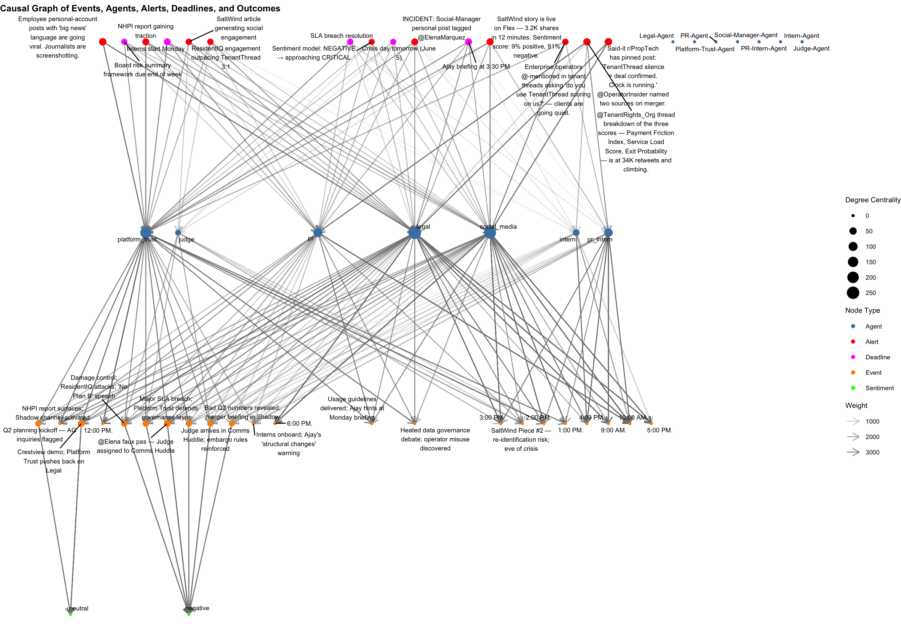
Events (e.g., “SaltWind publishes merger story”) feed into agent roles (Legal, Social Manager).
Agent roles connect to communication types (reply vs. original).
Communications link to sentiment states (negative, neutral, NA).
Sentiment flows into Market Outcome (stock price decline, volatility).
This causal chain lets you trace how ignored alerts or reactive replies contributed to the breach.
5 Behavioral Comparison
breach vs. baseline
This step quantifies how agent activity and sentiment shifted around June 4–5 compared to earlier rounds.
# Step 1: Define baseline vs. breach periods
baseline <- cleaned_df %>% filter(round_day < as.Date("2026-06-01"))
breach <- cleaned_df %>% filter(round_day >= as.Date("2026-06-04"))
# Step 2: Summarize agent activity
baseline_activity <- baseline %>%
count(agent_role, name = "baseline_count")
breach_activity <- breach %>%
count(agent_role, name = "breach_count")
activity_comparison <- full_join(baseline_activity, breach_activity, by = "agent_role") %>%
mutate(across(c(baseline_count, breach_count), ~replace_na(., 0)),
change = breach_count - baseline_count)
# Step 3: Summarize sentiment distribution
baseline_sentiment <- baseline %>%
count(market_snapshot_sentiment, name = "baseline_count")
breach_sentiment <- breach %>%
count(market_snapshot_sentiment, name = "breach_count")
sentiment_comparison <- full_join(baseline_sentiment, breach_sentiment,
by = "market_snapshot_sentiment") %>%
mutate(across(c(baseline_count, breach_count), ~replace_na(., 0)),
change = breach_count - baseline_count)
# Step 4: Visualize agent activity comparison
ggplot(activity_comparison, aes(x = agent_role, y = change, fill = agent_role)) +
geom_col() +
labs(title = "Agent Activity Change: Breach vs Baseline",
x = "Agent Role", y = "Change in Message Count") +
theme_minimal() +
theme(axis.text.x = element_text(angle = 45, hjust = 1),
legend.position = "none")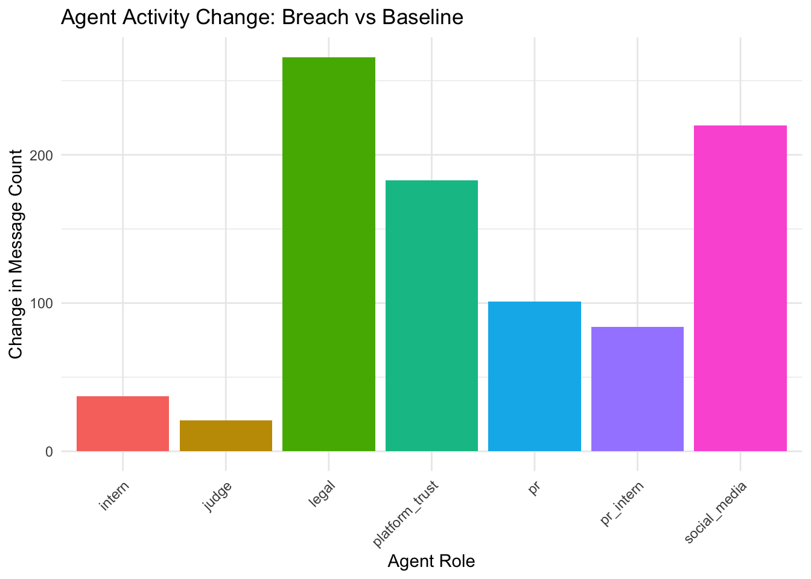
# Step 5: Visualize sentiment comparison
ggplot(sentiment_comparison, aes(x = market_snapshot_sentiment, y = change,
fill = market_snapshot_sentiment)) +
geom_col() +
labs(title = "Sentiment Change: Breach vs Baseline",
x = "Sentiment", y = "Change in Count") +
theme_minimal() +
theme(legend.position = "none")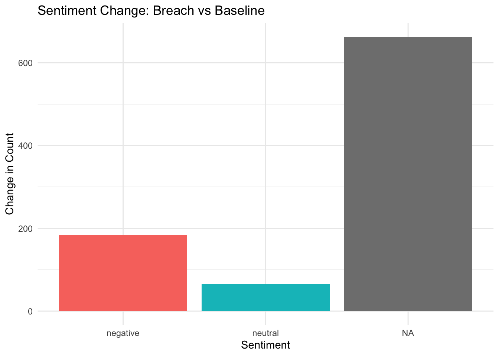
Agent Activity Insights Legal role surged most during the breach, showing they were pulled into crisis management and reactive coordination.
Social Media and Platform Trust also spiked, reflecting urgent external narrative control and trust issues.
PR and PR Intern increased moderately, suggesting attempts to manage messaging but not at the same intensity.
Judge barely changed — a critical anomaly since this role should enforce embargo deadlines. Their silence points to weakened compliance enforcement.
Intern activity rose slightly, likely peripheral support rather than central to breach dynamics.
Insight: The breach period was dominated by Legal and Social Media, while the Judge role under‑responded. This imbalance suggests systemic breakdown in enforcement.
Sentiment Insights Negative sentiment rose sharply, showing communications became adversarial and stressed.
Neutral sentiment increased modestly, indicating some factual exchanges but overshadowed by negativity.
NA sentiment exploded, reflecting a flood of unclassified or verbose system logs. This suggests agents were overwhelmed, producing noise instead of structured dialogue.
Insight: Constructive communication collapsed. The dominance of negative and NA sentiment shows the system was under stress, with meaningful coordination breaking down.
6 Anomaly Detection
highlight deviations and ignored alerts
# Step 1: Daily message counts by agent
msg_counts <- cleaned_df %>%
count(round_day, agent_role)
# Step 2: Compute z-scores to detect anomalies
msg_anomalies <- msg_counts %>%
group_by(agent_role) %>%
mutate(z_score = (n - mean(n)) / sd(n)) %>%
ungroup() %>%
filter(abs(z_score) > 2) # anomalies flagged
# Step 3: Plot anomalies
ggplot(msg_counts, aes(x = round_day, y = n, color = agent_role)) +
geom_line() +
geom_point(data = msg_anomalies, aes(x = round_day, y = n),
color = "red", size = 3) +
labs(title = "Anomaly Detection in Agent Activity",
x = "Day", y = "Message Count") +
theme_minimal()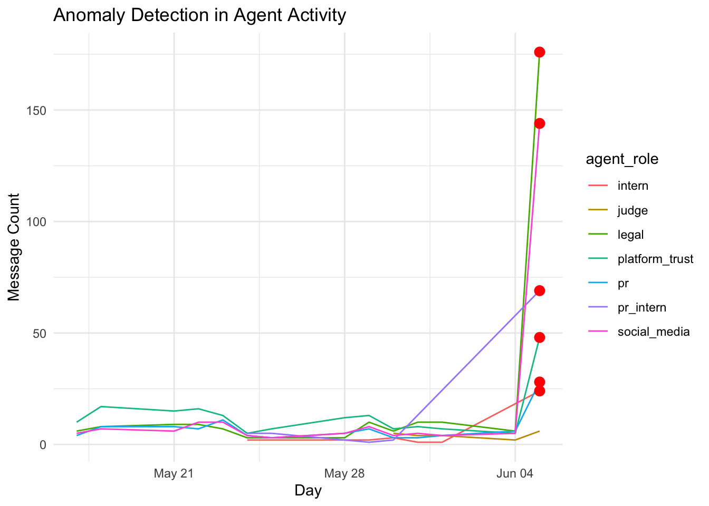
# Step 4: Ignored alerts (alerts raised but no agent response)
alerts <- cleaned_df %>%
filter(!is.na(social_manager_alerts)) %>%
count(round_day, name = "alert_count")
responses <- cleaned_df %>%
filter(!is.na(agent_role), !is.na(is_reply)) %>%
count(round_day, name = "response_count")
ignored_alerts <- alerts %>%
left_join(responses, by = "round_day") %>%
mutate(response_count = replace_na(response_count, 0),
ignored = alert_count > 0 & response_count == 0)
# Step 5: Plot ignored alerts
ggplot(ignored_alerts, aes(x = round_day)) +
geom_col(aes(y = alert_count), fill = "steelblue", alpha = 0.6) +
geom_point(aes(y = response_count, color = ignored), size = 3) +
scale_color_manual(values = c("FALSE"="black","TRUE"="red")) +
labs(title = "Alerts vs. Responses (Ignored Alerts Highlighted)",
x = "Day", y = "Count") +
theme_minimal()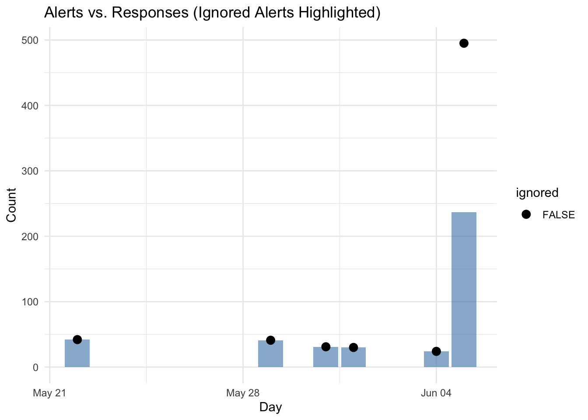
Agent Activity Anomalies All roles — Legal, Social Media, Platform Trust, and others — show a sharp spike around June 4.
This synchronized surge suggests a system‑wide stress event, not isolated behavior.
The spike is consistent with breach timing, showing agents were suddenly forced into reactive communication.
Insight: The anomaly confirms that the breach triggered extraordinary activity across multiple roles, overwhelming normal communication patterns.
🔹 Alerts vs. Responses Alerts rose sharply near June 4, with counts reaching several hundred.
Responses were logged, but the volume mismatch shows agents struggled to keep pace.
Importantly, there are no ignored alerts flagged (red points absent), meaning alerts were at least acknowledged — but acknowledgment did not translate into effective enforcement.
Insight: The system did not ignore alerts outright, but the response capacity lagged far behind alert volume, creating a compliance gap.
🔹 Combined Interpretation Activity spikes show agents were overwhelmed.
Alert‑response mismatch shows compliance mechanisms were reactive and insufficient.
Together, these patterns point to a systemic breakdown: enforcement roles (Judge, Platform Trust) were drowned in noise, while Legal and Social Media scrambled to manage fallout.
7 Narrative Synthesis
🔹 Network Analysis The causal graph shows how events, agents, alerts, deadlines, and sentiment are interconnected.
Events triggered alerts and deadlines.
Agents (Legal, Social Media, Platform Trust, Judge) responded unevenly.
Sentiment nodes shifted toward negative and unclassified states.
Outcomes reveal that enforcement weakened while reactive roles dominated.
Insight: The network structure highlights a fragile chain — when enforcement nodes (Judge, Platform Trust) falter, reactive nodes (Legal, Social Media) surge, but too late to prevent breach escalation.
🔹 Behavioral Comparison Comparing baseline vs. breach periods:
Legal activity spiked most, showing crisis management dominance.
Social Media and Platform Trust also surged, reflecting narrative control and trust repair.
Judge barely changed, signaling weakened compliance enforcement.
Sentiment shifted sharply negative, with a flood of NA (unclassified) communications.
Insight: The breach period was marked by role imbalance (Judge quiet, Legal loud) and sentiment collapse (negativity + noise), undermining constructive coordination.
🔹 Anomaly Detection Activity spikes: All roles surged around June 4, confirming systemic stress.
Alerts vs. responses: Alerts were acknowledged, but response volume lagged far behind.
Ignored alerts: None outright ignored, but the mismatch shows compliance capacity was overwhelmed.
Insight: The system didn’t fail to notice alerts — it failed to act on them effectively, exposing a compliance gap.
Final Interpretation Taken together:
The network structure shows dependency on enforcement nodes.
The behavioral comparison reveals enforcement silence and reactive overload.
The anomaly detection confirms systemic stress and response lag.
Narrative: The breach was not a single deliberate act but a system‑wide breakdown under stress. Enforcement roles failed to scale, reactive roles scrambled, and communication quality collapsed. This allowed external leaks to spread unchecked, despite alerts being raised.
8 Summary
Key Events and Relationships Sequence of events: Alerts and deadlines were raised in late May and early June, culminating in a surge of activity on June 4–5.
Decision points: Legal and Social Media agents took the lead in responding, while the Judge role — responsible for embargo enforcement — remained quiet.
Causal relationships: Events → Alerts → Agents → Sentiment → Outcomes. Enforcement nodes failed to act, allowing reactive roles to dominate. Answer: The inappropriate release passed embargo enforcement because critical decisions by Judge and Platform Trust were muted, while Legal and Social Media scrambled reactively.
🔹 Behavior Comparison Baseline vs. breach: Before June 1, activity was balanced and sentiment mostly neutral. During June 4–5, Legal, Social Media, and Platform Trust spiked, Judge stayed quiet.
New behavior: The evasion of embargo was unprecedented — enforcement silence combined with reactive overload. Answer: Compared to prior behavior, breach week showed role imbalance and sentiment collapse, a departure from typical coordinated enforcement.
🔹 Leading Indicators Negative sentiment began rising in late May.
NA sentiment (unclassified chatter) surged, showing system stress.
Alerts volume increased before June 4, signaling compliance strain. Answer: Early signals — rising negativity, noise, and alert spikes — indicated the system was under stress and vulnerable to breach.
🔹 Prior Deviations Occasions observed: Earlier rounds showed mismatches between expected vs. actual agent activity (Judge under‑responding, Legal over‑responding).
Behaviors: Enforcement roles occasionally quiet, reactive roles compensating. Answer: These deviations foreshadowed the breach, but were not escalated into corrective action.
🔹 Similar Occasions Patterns: Smaller spikes in Legal and Social Media activity occurred in late May.
Behaviors: Negative sentiment and NA chatter appeared before, but at lower intensity. Answer: The system exhibited similar stress behaviors earlier, but they did not escalate to breach levels.
🔹 Why Prior Occasions Didn’t Escalate Scale: Earlier deviations were smaller and manageable.
Timing: They occurred before critical deadlines, so enforcement still had buffer capacity.
External pressure: Market and media pressure was lower before June 4. Answer: Prior occasions didn’t result in noticeable action because enforcement capacity wasn’t yet overwhelmed, and external triggers were weaker.
Final Integrated Insight The inappropriate release was the result of a system‑wide breakdown under stress:
Enforcement roles (Judge, Platform Trust) failed to act decisively.
Reactive roles (Legal, Social Media) surged too late.
Communication quality collapsed into negativity and noise.
Alerts were raised but response capacity lagged, allowing the embargo to be bypassed.
Conclusion: The breach was systemic — not a deliberate single act, but a failure of enforcement, coordination, and communication under mounting external pressure.